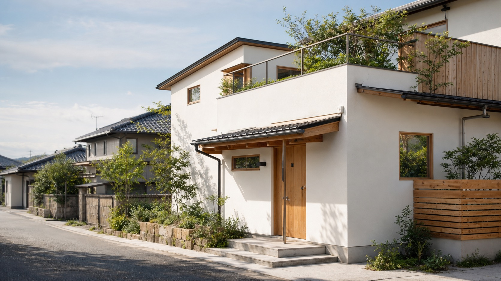
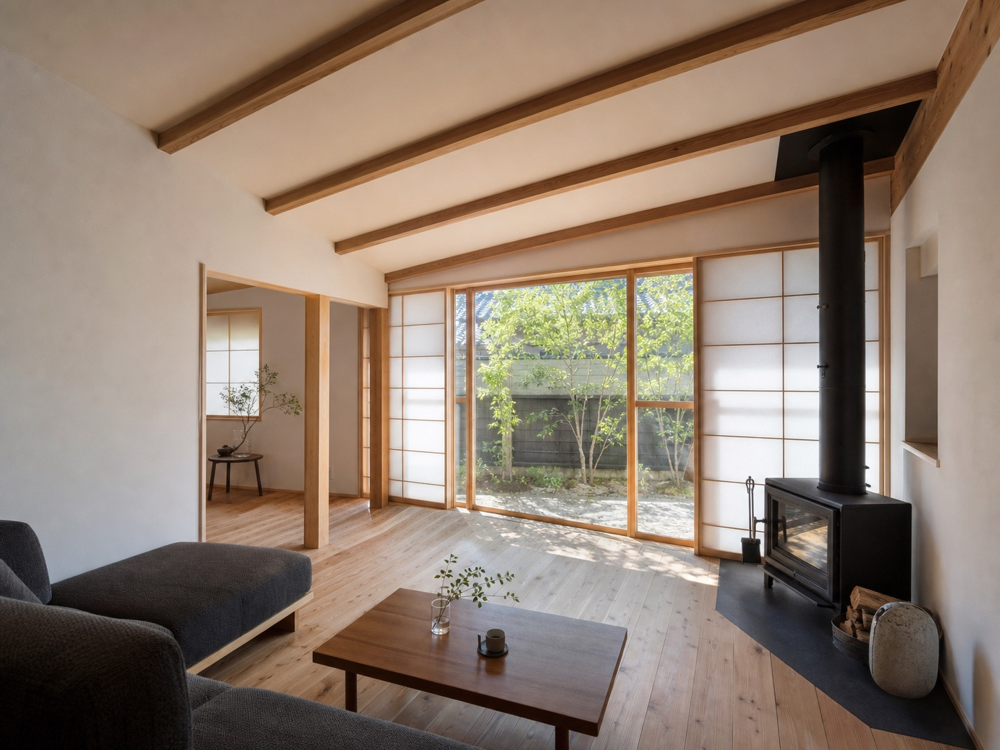
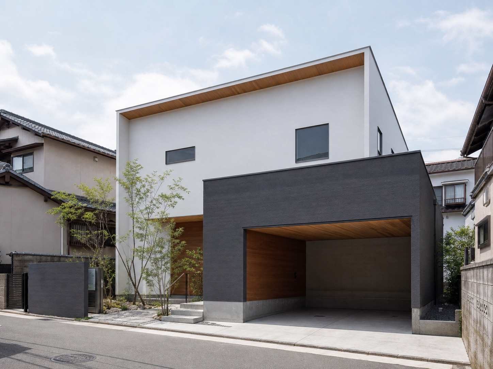
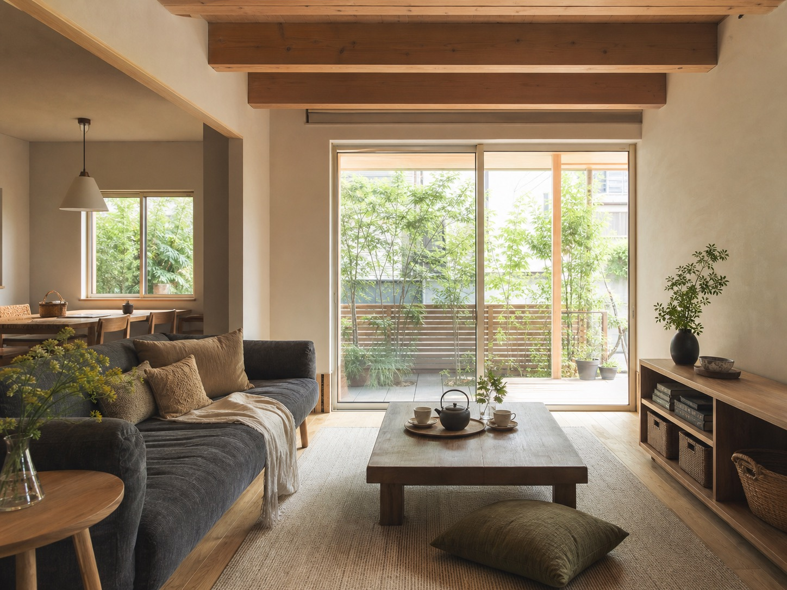
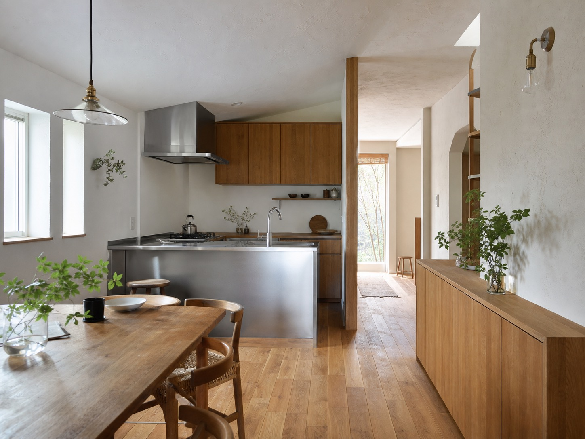

注文住宅
新築の施工事例が掲載されており、simple & smart house、漆喰、風、屋上緑化などのテーマが確認できます。
このページは営業提案用サンプルです。公式サイトではありません。

仮画像福岡市南区長住 / 昭和21年創業
注文住宅、リノベーション、福岡県・福岡市工事まで。量産ではなく、一邸ごとの暮らしと環境、コストを研究する工務店です。
Concept

公式サイトでは、稲葉工務店のモットーとして「常に建築の現状に疑問を持ち、よりよい住生活を考え行動すること」が掲げられています。
住みやすさ、環境、コスト。建築家との対話を重ねながら、福岡の暮らしに合う家を一つずつ形にしていく姿勢を、余白と写真で伝えるデモにしました。
Services
新築の施工事例が掲載されており、simple & smart house、漆喰、風、屋上緑化などのテーマが確認できます。
住宅・長屋・アパート・クリニックなど、既存建物の再生に関わる施工事例が確認できます。
会社概要の事業内容に記載があります。具体的な公開事例や範囲は公開前に要確認です。
宅地建物取引業、土地建物の売買、不動産全般が会社概要に記載されています。
Strength
創業昭和21年。
地域で続けてきた施工力に、建築家の視点を掛け合わせる。
Works
下記画像は差し替え前提の仮画像です。名称は公式サイトで確認できた掲載事例名のみ使用しています。



Consultation
見学会・イベント・採用情報は公式サイト内で明確な掲載を確認できませんでした。公開時は最新情報の有無を確認し、ある場合のみこの枠を差し替えます。
Company
| 商号 | 株式会社稲葉工務店 |
|---|---|
| 創業 | 昭和21年 |
| 資本金 | 1000万円 |
| 代表者 | 代表取締役 稲葉 嘉行 |
| 所在地 | 〒811-1362 福岡市南区長住2-5-24 |
| TEL | 092-551-2208 |
| FAX | 092-551-2472 |
| i-labo@inaba-koumuten.com | |
| 営業時間 | 要確認 |
| 対応エリア | 要確認 |
| 事業内容 | 一般建設業、注文住宅、リノベーション、福岡県・福岡市工事、宅地建物取引業、土地建物の売買、不動産全般 |